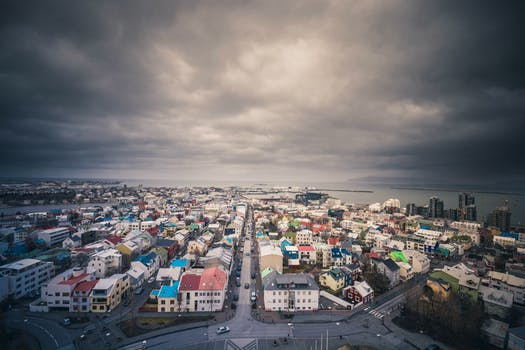
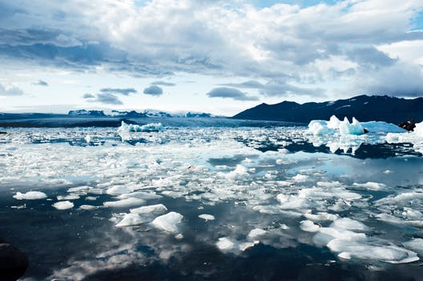

Where to Next?
Iceland!
Hitting headlines, topping bucket lists, wooing nature lovers and dazzling increasing numbers of visitors - there seems no end to the talents of this breathtaking northern destination.

Nordic Nirvana Don't for a minute think it's all about the great outdoors. The counterpoint to so much natural beauty is found in Iceland's cultural life, which celebrates a literary legacy that stretches from medieval sagas to contemporary thrillers by way of Nobel Prize winners. Live music is everywhere, as is visual art, handicrafts and locavore cuisine. The world's most northerly capital is home to the kind of egalitarianism, green thinking and effortless style that its Nordic brethren are famous for - all of which is wrapped in Iceland's assured individuality.

A Personal Experience The warmth of Icelanders is disarming, as is their industriousness - they've worked hard to recover from financial upheaval, and to transform Iceland into a destination that, thanks to its popularity with visitors, can host five times its population each year. Pause and consider a medium-sized city in your country - then give it far-flung universities, airports and hospitals to administer, 30-odd active volcanoes to monitor, and hundreds of hotels to run. How might they cope? Could they manage as well as the Icelanders - and still have time left over to create spine-tingling music and natty knitwear?
A Symphony of Elements An underpopulated island marooned near the top of the globe, Iceland is, literally, a country in the making. It's a vast volcanic laboratory where mighty forces shape the earth: geysers gush, mudpots gloop, ice-covered volcanoes rumble and glaciers cut great pathways through the mountains. Its supercharged splendour seems designed to remind visitors of their utter insignificance in the greater scheme of things. And it works a treat: some crisp clean air, an eyeful of the cinematic landscapes, and everyone is transfixed.